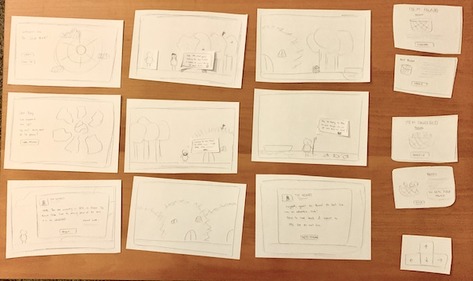

I learned that, while the controls were intuitive, I need to find a way to make interactive objects more noticeable. Sky seemed to know to click on an object only when the character stopped there. However, this probably wouldn’t be the case when players are actually running through the game. I also learned that once a mini-mission was started, Sky would complete the mission first rather than exploring the rest of the world. This was an interesting discovery because I thought that he would continue exploring and gathering materials before completing an NPC’s request.
Overall, Sky thought that the project concept was very cool and fun, and said that it would be an enjoyable project. But, he had also brought up concerns about feasibility. To make this project less complex, he suggested using only point-and-click functions rather than adding in a character that moves with arrow keys. Sky recommended finding a partner who does illustrations so I could focus on the coding itself, but I think most groups are established at this point and so I will try our image generators and illustration on my own time.
In future prototypes, I would find a way to highlight interactive objects, either by making them bolder or with color, or adding effects, like sparkles. I might also implement a system where players must complete missions in a certain order because if they were to complete the main mission of finding the missing seal piece first, they wouldn’t have explored the environment and thus would not learn about Davis and the Seal.
Click to see the full image here
{kind=link}